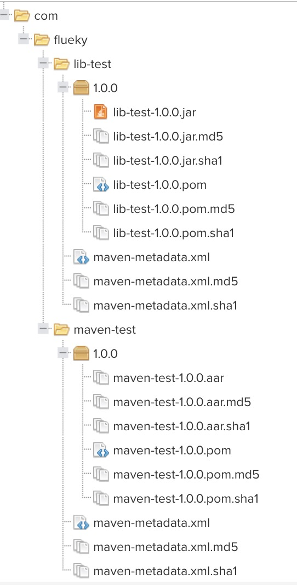
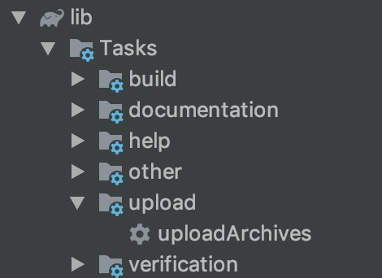

自从公司使用 Maven 仓库管理代码后，一直想着有一个自己的代码仓库。虽然写的代码不多，但是不影响 Get 一项新技能。
1. 集成 Maven
由于本人是做 Android 开发，于是通过集成 Maven 的 Gradle 插件，生成对应的 aar 和 jar 库。
在 Module 的 build.gradle 中，集成配置如下：
、
1
2
3
4
5
6
7
8
9
10
11
12
13
14
15
16
17
18
19
20
21
22
23
24
25
26
27
28
29
30
31
32
33
34
35
36
37
38
|
apply plugin: 'maven'
group = 'com.flueky'
version = '1.0.0'
def localMavenRepo = 'file://' + new File(System.getProperty('user.home'), '.m2/repository').absolutePath
def projectMavenRepo = 'file://' + rootDir.getAbsolutePath() + '/repository'
def nexusMavenRepo = 'http://127.0.0.1:9000/repository/android/'
def nexusUserName = 'admin'
def nexusPassword = 'admin123'
uploadArchives {
repositories.mavenDeployer {
repository(url: localMavenRepo)
repository(url: projectMavenRepo)
repository(url: nexusMavenRepo) {
authentication(userName: nexusUserName, password: nexusPassword)
}
pom.groupId = "com.flueky"
pom.artifactId = "maven-test"
pom.version = "1.0.0"
}
}
|
配置好上述代码后，生成 aar 或 jar 是由 Module 类型决定。
1
2
3
4
|
apply plugin: 'com.android.library'
apply plugin: 'java'
|
已本地私服为例，最终导出的远程库结构如下：

2. 导出到 Maven
配置完成后，即可在 Gradle 任务中查看。

点击 uploadArchives 即可完成导出。之后在对应的目录下查看。
3. 使用 Maven 仓库
针对前面配置的三种仓库地址，使用时需要分别作配置。
1
2
3
4
5
6
7
8
9
10
11
12
13
14
15
16
17
18
| allprojects {
repositories {
mavenLocal()
maven {
credentials {
username "flueky"
password "123456"
}
url 'http://127.0.0.1:9000/repository/android/'
}
maven { url 'file://' + rootDir.getAbsolutePath() + '/repository/' }
}
}
|
最后添加依赖。
1
2
3
4
| dependencies {
implementation 'com.flueky:maven-test:1.0.0'
implementation 'com.flueky:lib-test:1.0.0'
}
|
最后，如何搭建 Maven 私服，没做介绍，主要是我也才上手，搭建私服，推荐使用 nexus 。
源码地址
觉得有用？那打赏一个呗。[去打赏](/donate/)